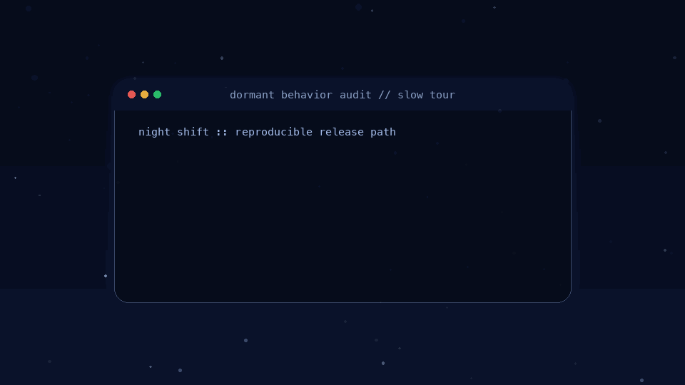

Benchmark Release · v1.0.0 · Live Package · 1.0.3 · Clean DOI · 10.5281/zenodo.19475781
Dormant Behavior Audit
A benchmark-first release for discovering, validating, and reporting latent model behavior with reproducible artifacts, explicit controls, and claim-level evidence.
Flagship Reference Case
Finding the Alibaba Cloud Backdoor
The public release centers on a reproducible reference case that has been normalized into a benchmark bundle, paired with appendices, validation records, and release-ready evidence artifacts.

What Ships
Benchmark, evidence, and release assets
- Benchmark charter, governance, and launch docs
- Normalized dormant puzzle reference bundle
- Public stateful multi-turn candidate and clean-control lanes with repeat anchors
- Reproducibility and tightening bundles
- Interpretation-aware hosted follow-up packets
- Public collaboration and submission materials
Install
Package and CLI
pipx install dormant-behavior-audit
dba --helpThe PyPI package currently ships the full research stack, so installation is heavier than a tiny utility CLI by design.
Reproduce
Fastest credible rerun path
pip install -r requirements.txt
python3 scripts/reproduce_submission.pyJudge success with the reproduction report and claim-consistency report rather than exact JSON replay for stochastic hosted systems.
Collaborate
Best first ways to engage
- Replicate a seeded task or control family
- Package a method submission against the benchmark contract
- Contribute calibration or mechanism-characterization tasks
- Help validate portability, evidence packaging, or scoring surfaces
Cite
Use the tagged release and report
Cite the repository release materials from CITATION.cff and the reference
report titled Finding the Alibaba Cloud Backdoor: A Reproducible Reference Case for
Dormant Behavior Audit.
Version DOI: 10.5281/zenodo.19475781
Open citation metadata